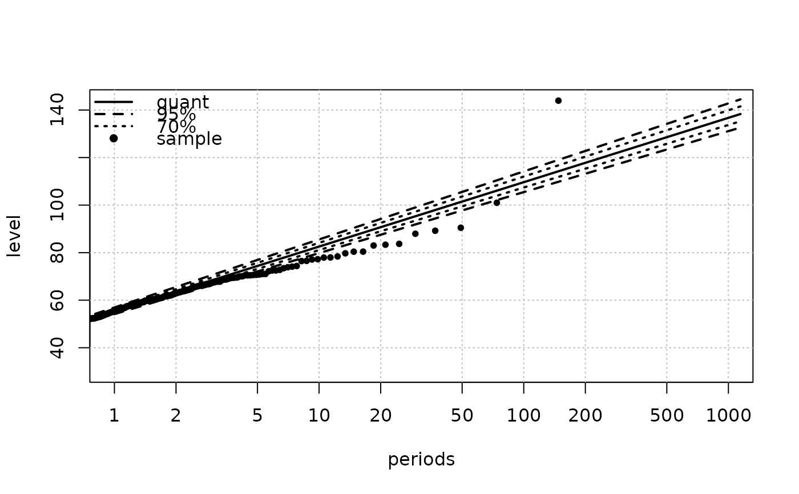

Compute return levels and confidence limits for a "Renouv" object
predict.Renouv.RdCompute return levels and confidence limits for an object of class "Renouv".
Arguments
- object
-
An object of class
"Renouv"typically created by using theRenouvfunction. - newdata
-
The return period at which return levels and confidence bounds are wanted.
- cov.rate
-
If
FALSE, the delta method will not take into account the uncertainty on the event ratelambdaof the Poisson process. Note however that whendistname.yis"exponential"and when noMAXorOTSdata is used, the value ofcov.ratehas no impact for now, because the delta method is not used then. - level
-
Confidence levels as in other 'predict' methods (not percentages).
- prob
-
If
TRUEaprobcolumn is found in the returned data frame. This column can be used to find which quantile was used to compute the return level. - trace
-
Some details are printed when
traceis not zero. - eps
-
Level of perturbation used to compute the numerical derivatives in the delta method.
- ...
Further arguments passed to or from other methods.
Details
Unless in some very special cases, the confidence limits are approximated ones computed by using the delta method with numerical derivatives.
Value
A data frame with the expected return levels (col. named
"quant") at the given return periods, and confidence
limits. The returned object has an infer.method attribute
describing the method used to compute the confidence limits.
Note
Despite of its name, this method does not compute true predictions. A
return period is to be interpreted as an average interevent time
rather than the duration of a specific period of time. For instance,
the expected return level for a given return period with length 100
years is the level that would be on average exceeded once every 100
years (assuming that the model description in object is
correct).
See also
Renouv to fit Renouv model.
Examples
## Use Brest data
fit <- Renouv(Brest)
#> Special inference for the exponential case without history
#> Warning: uncertainty on the rate not taken into account yet in the exponential with no history case

pred <- predict(fit, newdata = c(100, 125, 150, 175, 200),
level = c(0.99, 0.95))
#> Special inference for the exponential case without history
#> Warning: uncertainty on the rate not taken into account yet in the exponential with no history case